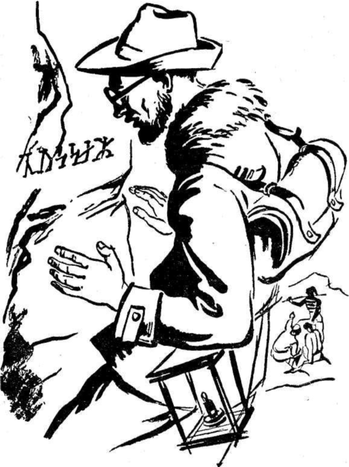

Yemeği süratle yedik. Rahatsız bir şekilde bulunduğumuz yere yerleşmeğe çalıştık. Denizden 1650 metre yukarıda, şiddetli soğuğun altında, çıplak taş üstüne yattık, Mamafih, sabaha kadar derin derin uyudum. Çok yorgun olduğum için rüya bile görmedim.
Ertesi sabah, yarı donmuş bir halde uyandık. Hava açık, güneş parlaktı. Yattığım yerden kalkarak, kraterin üstüne çıktım. Gözlerimin önünde, şimdiye kadar eşine asla, rastlamadığım şahane bir manzara uzanıyordu.
Biraz sonra Hans'la dayım da yanıma geldiler. Dayım eliyle ufukta sisli bir çizgiyi işaret ederek:
- Grönland, dedi.
Hayretle, aynı kelimeyi tekrar ettim. Dayım:
- Arada yüz doksan kilometre var, diye izahına devam etti. Buzların eridiği mevsimde, kopan buz parçalarının üstünde ayılar İzlanda’ya kadar gelirler. Fakat bu seni korkutmasın. Ayılar buraya gelmezler. İşte Sneffels'in iki tepesi. Üzerinde bulunduğumuz tepeye İzlandalıların ne isim taktıklarını Hans'a soralım.
Hans, dayımın sorusuna bir kelimeyle cevap verdi:
- Scartaris...
Dayım, muzaffer bir tavırla yüzüme baktıktan sonra:
- Kratere dönelim, dedi.
- Sneffels'in krateri, tersine çevrilmiş bir şekerci külahına benziyordu. Çapı aşağı yukarı iki kilometreydi. Derinliği ise yarım kilometreden biraz fazlaydı. Kraterin dip genişliğinin ise yüz elli veya iki yüz metre olduğunu tahmin ediyordum. Krateri içeriye doğru, yumuşak bir meyille konikleştiği için, oraya kolayca inebilirdik. Fakat o anda sakin görünen yanardağ birdenbire faaliyete geçecek olursa, oraya inmek göz göre göre kendimizi ateşin içine atmakla eşit olmayacak mıydı?
Bu düşünce, tüylerimin diken diken olmasına kâfi geldi. Yaptığımız, delilikten başka bir şey değildi. Fakat, artık geriye dönemezdim. Hans, her zamanki lâkayt ve sakin tavrıyla gurubumuzun başına geçmişti. Hiçbir şey söylemeden onu takip ettim.
Hans, inişi kolaylaştırmak için, kraterin iç duvarında zikzaklar çizerek ilerliyordu. Yanardağın, ateş püskürdüğü zamandan arta kalmış kayaların arasından ilerliyorduk. Bazen, dokunduğumuz kocaman kayalar karanlık boşluğa sonu gelmeyecekmiş hissini uyandıran aksisedalarla yuvarlanıyordu.
Kraterin içinde bazı yerlerinde buzullar meydana gelmişti. Hans, buralara gelince aşırı bir dikkatle ilerliyordu. Demir bastonuyla yeri iyice yokladıktan sonra adımını atıyordu. Bazı yerlerde de, uzun bir iple birbirimize bağlanıyorduk. İçimizden birisinin ayağı kayarsa, diğerleri onu boşluğa yuvarlanmaktan koruyacaklardı. Bu iyi bir tedbir olmakla beraber, tehlikeyi tamamıyla uzaklaştırmaktan uzaktı.
Bir ip paketinin İzlandalılardan birinin elinden boşluğa fırlayışını nazarı itibara almayacak olursak, bütün güçlüklere rağmen kraterin dibine kazasızca inmiş olduğumuzu söyleyebilirim.
Öğleyin hedefimize ulaşmıştık. Başımı kaldırıp, yukarı baktım. Kraterin ağzından gökyüzünün bir parçası, iyice ufalmış olarak görünüyordu.
Kraterin dibinde, üç kuyu görünüyordu. Sneffels'in faaliyet zamanında bu kuyulardan erimiş madenlerle, yanan gazların fışkırmış olduğu muhakkaktı. Bu kuyuların otuz veya kırk metre çapında olduklarını tahmin ediyordum. Korkunç birer canavar gibi ağızlarını açmış, bizi bekliyor gibiydiler. Bu kuyulara bakmağa cesaret edemedim. Fakat dayım, onları teker teker tetkik etti. Son derece heyecanlıydı. Anlaşılmaz hareketler yaparak, birinden diğerine koşuyordu. Bu arada söylediği sözleri anlamak imkânsızdı. Hans'la arkadaşları bir kayanın üstüne oturmuşlar, onu seyrediyorlardı.
Deli zannettiklerine eminim.
Bu konuşma sırasında dayım birdenbire korkunç bir şekilde bağırdı. Ayağı kayıp, kuyulardan birine yuvarlandığını zannettim. Fakat bu tahminimin yanlış olduğunu çok geçmeden anladım. Kollarıyla bacaklarını iki yana ayırmış bir kayanın önünde heykel gibi duruyordu. Yüzünde sonsuz bir hayret ve sevincin izleri belli oluyordu. Kısa bir süre sonra, deli gibi bağırdı:
-Axel! Axel! Çabuk buraya gel!
Oraya koştum. Hans'la arkadaşları yerlerinden kımıldamamışlardı. Dayım, bana kısaca:
-Bak! dedi.
Hayret ve sevincini paylaşarak, kayanın üstünde, zamanla silinmeğe yüz tutmuş olan şu yazıyı okudum:

Dayım heyecanla:
- Arne Saknussemm! diye bağırdı. Hâlâ tereddüt ediyor musun?
Cevap vermedim. Sessizce yerime döndüm. Hakikat, bütün ağırlığıyla beni eziyordu.
Bu şekilde ne kadar zaman sessizce oturduğumu şimdi hatırlayamıyorum. Hatırladığım tek şey, başımı kaldırdığım zaman, dayımla Hans'ın karşımda yalnız olduklarını görmüş olmamdı. İzlandalılar, ücretleri ödenerek geri gönderilmişlerdi. O anda, Sneffels'den aşağıya doğru yürüyerek, Satapi'ye dönüyorlardı.
Hans, lâvların oymuş olduğu bir sel yatağında, bir kayanın dibinde uyuyordu. Dayım, kraterin dibinde, tuzağa düşmüş vahşî bir hayvan gibi dolaşıyordu. Onun yanma gitmeğe ne arzu, ne de kuvvet duydum. Hans'ı taklit ederek, uyumağa çalıştım. Bu arada akseden gürültüleri tamamıyla duyuyordum.
Kraterin içindeki ilk gecemiz böylece geçti.
Ertesi sabah, gri, bulutlu bir gökyüzü kraterin ağzında belirmişti. Dayım sonsuz bir öfke içindeydi. İlk anda bunun sebebini anlayamadım. Kısa bir süre sonra bütün hakikat gözlerimin önünde canlandı. Kalbim, ümit ve sevinçle doldu.
Saknussem, korkunç birer canavar ağzı gibi görünen üç kuyudan birini seçmişti. İzlandalı bilginin, elimize geçen şifreli yazısına göre, Scartaris'in gölgesi haziran ayının son günlerinde bu üç kuyudan birinin üstüne düşmeliydi. Bu sipsivri tepeyi bir güneş saati olarak kullanmıştı. Hava kapalı ve bulutlu olunca, tepenin gölgesi kuyuların üstüne düşemeyecekti. 25 Haziran’daydık. Eğer altı gün güneş görünmeyecek olursa, tecrübeyi bir sene sonra tekrarlamak zorunda kalacaktık. İşte ümit ve sevincimin tek sebebi buydu.
Dayımın öfkesini kelimelerle anlatmağa imkân göremiyorum. O gün böylece geçti. Hans yerinden kımıldamamıştı. Kendi kendine ne beklediğimizi sorduğu muhakkaktı. Dayım bana bir kelime bile söylemişti. Gözleri her saniye kraterin tepesindeydi.
26 Haziran da aynı şekilde geçti. Bütün gün yağmurla karışık kar yağdı. Hans, oyalanmak maksadıyla, kraterin içindeki taşlardan bir kulübe yaptı. Ben de onu gözlerimle takip ettim.
Dayım, bir saniye bile yerinde duramıyordu. Öfke ve sabırsızlık içindeydi. Bu, limana kadar geldikten sonra, karaya oturmaktan başka bir şey değildi.
Ertesi gün de havada hiçbir değişiklik olmadı. Fakat, 28 Haziran pazar günü dayımın yüzü güldü. Bulutlar dağıldı, güneş her tarafı aydınlattı. Kraterin içinde aydınlanmayan bir nokta kalmadı. Öğleye doğru, en tepede olduğu bir sırada Scartaris'in gölgesi ortadaki kuyunun kenarına düştü. Dayım, heyecanla:
- İşte orası! Orası! diye bağırdı. Dünyanın merkezine oradan gidiliyor!...
Kılavuz, sakin bir sesle:
- Forüt! dedi.
Dayım:
- İleri; diye bağırdı.
Saat biri on üç geçiyordu.